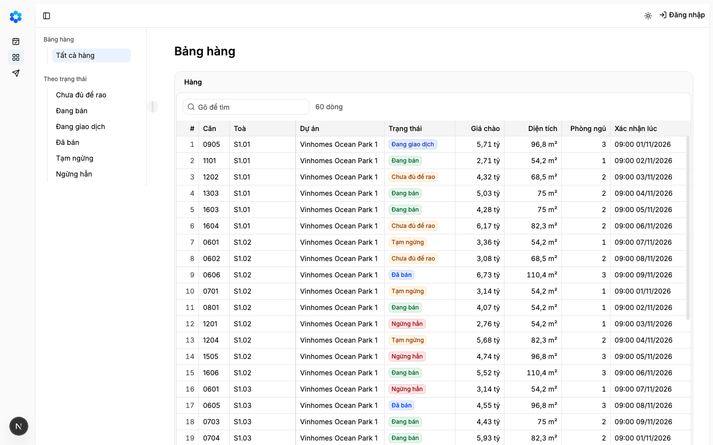
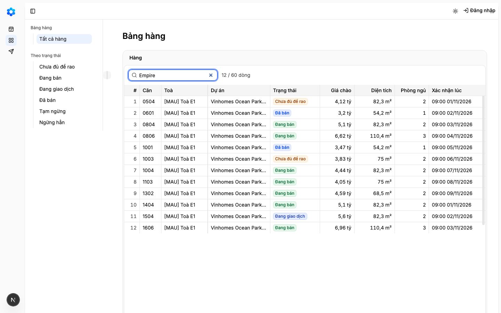
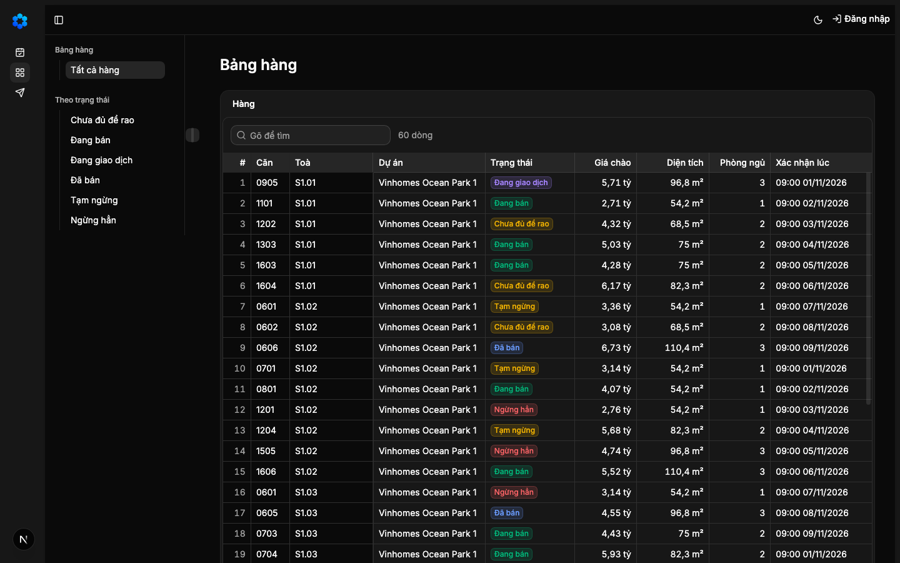
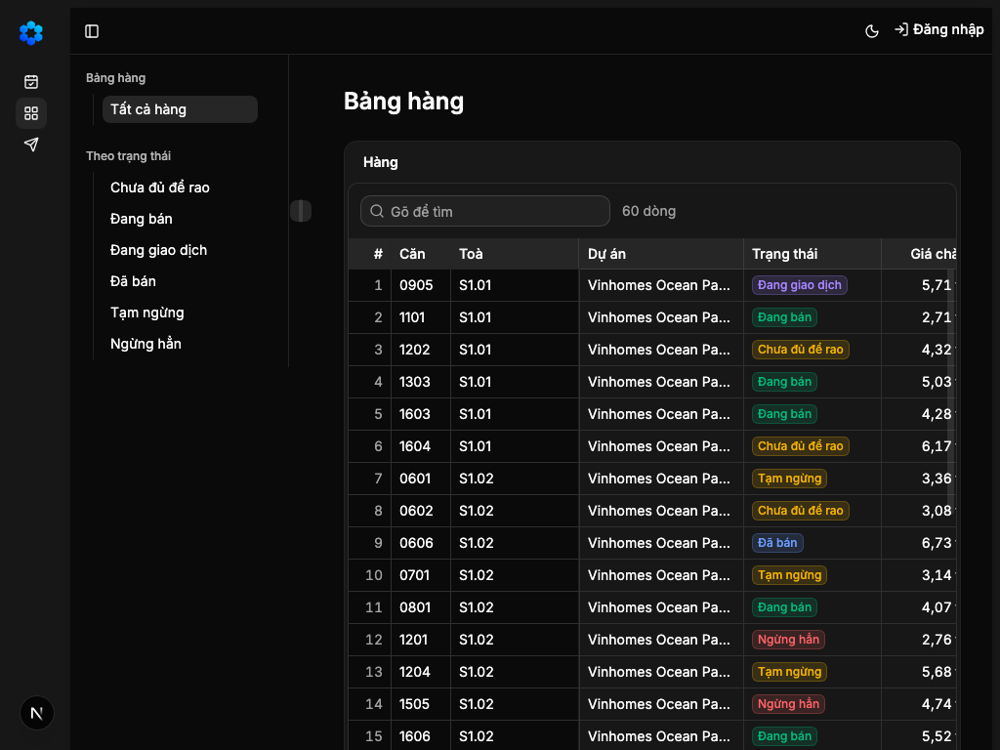
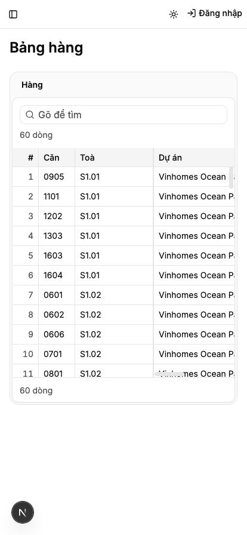
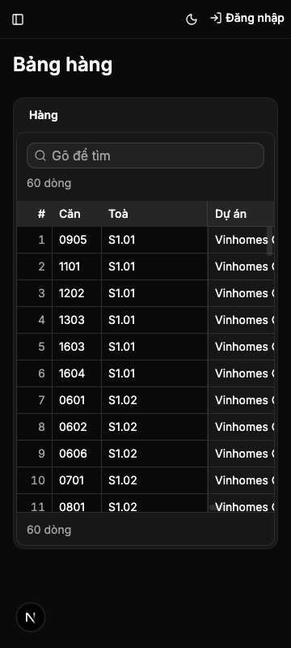
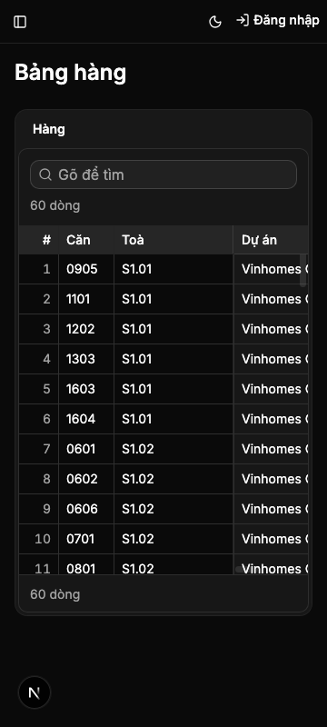

"Đầu chủ mở Bảng hàng và thấy các căn của sàn trên Lưới, đủ trạng thái màn, ở bốn khổ màn hình"
Vì sao làm
Lát cắt đầu, là màn mẫu cho các màn sau
Đã hứa
- AC-1 — Given dữ liệu mẫu của hàng 1 (căn của danh mục, lần chào và liên kết căn của sàn mẫu), When dựng dòng Bảng hàng,
- AC-2 — Given mở Bảng hàng ở bốn khổ, When trang sẵn sàng, Then đầu màn là «Bảng hàng», vùng dữ liệu có cột số dòng rồi đúng
- AC-3 — Given bộ bài sinh từ sổ màn (hàng 1f), When chạy bộ khung và bộ vùng trên Bảng hàng ở bốn khổ, Then màn có vùng nên
- AC-4 — Given danh sách «chưa có vùng» của bộ công thức, When Bảng hàng đã có vùng, Then danh sách không còn `inventory`
- AC-5 — Given bài «tìm» của bộ công thức và lưới cuộn liền, When đọc dòng và chọn chuỗi thử, Then bài đọc mọi dòng bằng cách
- AC-6 — (cross-layer) Given bản thật (`NODE_ENV=production`), When mở Bảng hàng với `?state=error` (hay `loading`, `empty`, `partial`,
- AC-7 — Given tệp chứng minh màn của hồ sơ này, When chạy lưới chứng minh màn, Then mục `## Màn inventory` theo lối màn mẫu
- AC-8 — Given kho thật, When chạy bài tự kiểm phép kiểm ma trận, Then nó chứng rằng: lưới chứng minh màn đọc được đúng mười
- AC-9 — Given năm khái niệm nhãn mới (giá chào, trạng thái, diện tích, phòng ngủ, xác nhận lúc), When chạy bộ kiểm ngôn ngữ
- AC-10 — Given Bảng hàng đang chạy, When nhìn ở bốn khổ với trạng thái có dữ liệu, sáng và tối, Then thấy đầu màn, tám cột
- AC-11 — Given Bảng hàng với 60 căn mẫu ở khổ 1440, When trang sẵn sàng, Then cả tám cột hiện đủ trong vùng và vùng không
Thiết kế
_acceptance/bang-hang-ban-doc/design.md
Quyết định
- 2026-11-11 · Máy · approach · S1 — Nạp 3 luật sản phẩm từ PRODUCT-INVARIANTS.mdKho đã khai tệp luật sản phẩm — bước thiết kế đọc nó trước khi chọn.
- 2026-11-11 · Máy · approach · S1 — Đã tra tri thức: Đầu chủ mở Bảng hàng và thấy các căn của sàn trên Lưới, đủ trạng thái màn, ở bốn khổ màn hìnhKho đã khai tri_thuc — bước thiết kế tra trang trước khi chọn.
- 2026-11-11 · Máy · approach · S1 — Bảng hàng thành màn mẫu của họ Lưới khi tệp chứng minh đạt đủ ma trận trạng thái; cùng vòng đổi dòng màn mẫu của tệp họ thành inventory.Chốt của chủ kho ở hàng 1c, ghi trong tệp họ Lưới.
- 2026-11-11 · Máy · approach · S1 — Ghép dữ liệu mẫu (căn của danh mục với lần chào) ở trang Bảng hàng, thành phần vùng ở mô-đun hàng chỉ nhận cặp lần chào–căn.Mô-đun hàng không được phụ thuộc mô-đun danh mục; thêm phụ thuộc là thay đổi thiết kế phải xin.
- 2026-11-11 · Máy · approach · S1 — Trạng thái vùng của Bảng hàng bật bằng tham số ?state= chỉ ở bản phát triển và bản chạy thử; bản thật bỏ qua tham số.Bộ bài sinh từ sổ màn mở từng trạng thái bằng tham số này trên mọi màn Lưới (tools/e2e_templates/recipes.ts).
- 2026-11-11 · Máy · approach · S1 — Hỏi: Bảng hàng chia 25 dòng một trang, và bài «tìm» của bộ bài đọc cỡ trang thật của vùng thay cho số 50 ghi cứng.Sổ hành vi để cỡ trang chốt ở Bảng hàng; với 60 căn mẫu và cỡ 50 bài tìm không có chuỗi thử nên đỏ dù màn đúng (đã thử bằng hàm chọn chuỗi của bộ bài).
- 2026-11-11 · Máy · approach · S1 — Hỏi: thêm năm khái niệm nhãn cột vào mô hình nghiệp vụ: Giá chào (ListPrice), Trạng thái (StandardStatus), Diện tích (LivingArea), Phòng ngủ (BedroomsTotal), Xác nhận lúc (LastConfirmedAt, của mình).Luật kho cấm gõ cứng nhãn; năm cột của Bảng hàng chưa có nhãn trong ontology/labels.yaml.
- 2026-11-11 · Máy · approach · S1 — Hỏi: tám cột của Bảng hàng là Căn, Toà, Khu, Trạng thái, Giá chào, Diện tích, Phòng ngủ, Xác nhận lúc; không cột ngày bán, giá chốt, lý do rút.Đầu chủ đọc nhanh căn nào đang chào giá bao nhiêu; ba cột bỏ chỉ có ở lần chào đã chốt hay đã rút, để cho hồ sơ căn (hàng 3).
- 2026-11-11 · Máy · descope · S1 — bỏ design-pass — Bảng hàng ghép thuần từ khuôn Lưới đã có bản mẫu bấm được (/proto/luoi-va-o-theo-kieu), chỉ khác dữ liệu và cột; ảnh bốn khổ sáng tối ở Cổng Bằng chứng (E10, E11)Khuôn Lưới và trạng thái vùng đã duyệt trên bản bấm được ở hàng 1b; hàng này không thêm hành vi mới.
- 2026-11-11 · Máy · descope · S1 — bỏ coverage-scan — quét trục tại chỗ theo khuôn entity-feature trong mục Coverage của hợp đồng, không gọi bộ quét; đổi lại không có bằng chứng độ phủ do bộ quét sinhKhông gian là một màn đọc với trục đã khai sẵn ở design/states.md và bốn khổ của họ Lưới.
- 2026-11-11 · Máy · descope · S1 — bỏ đường-đo — ô cơ hội của hàng 2 chưa khai ngưỡng nghiệm thu, và đợt không nghiệm thu giá trị từng hàngopportunity.md để trống mục ngưỡng; chủ kho dời nghiệm thu giá trị tới cuối lộ trình (sổ luật đợt).
- 2026-11-11 · Máy · descope · S1 — bỏ design-pass — Hỏi: Bảng hàng ghép thuần từ khuôn Lưới đã có bản mẫu bấm được (/proto/luoi-va-o-theo-kieu), chỉ khác dữ liệu và cột; ảnh bốn khổ sáng tối ở Cổng Bằng chứng (E10, E11)Khuôn Lưới và trạng thái vùng đã duyệt trên bản bấm được ở hàng 1b; hàng này không thêm hành vi mới, nhưng tám cột, chữ đầu cột và cỡ 25 dòng là thứ chủ kho thấy lần đầu.
- 2026-11-11 · Máy · approach · S1 — Đã có bản bấm được: chạy bước thiết kế trên chính trang Bảng hàng trong khung thật (dữ liệu mẫu, năm chữ đầu cột tạm), chụp năm trạng thái ở bốn khổ, sáng và tối, gửi kèm thẻ.Chủ kho không quyết được Cổng Phạm vi trên thẻ chỉ có chữ; Bảng hàng là màn mẫu của họ Lưới nên phải duyệt trên vật nhìn được (lời giám sát chuyển từ chủ kho).
- 2026-11-11 · Máy · approach · S1 — Cột chữ của Lưới dùng chung rộng theo chuỗi dài nhất vùng đang giữ, không hẹp hơn nhãn, không quá độ dài đọc của kiểu; các kiểu khác giữ độ dài mẫu. Sửa ở luật bề rộng dùng chung, không gõ bề rộng trong màn.Giám sát soi ảnh bản bấm được: ở 1440 cột cuối khuất sau cuộn ngang vì mã căn 4 ký tự và mã toà 5 ký tự chiếm chỗ 16 ký tự; Bảng hàng là màn mẫu nên sửa ở hàng này (việc G-1111-10, duyệt chạm tệp K-6).
- 2026-11-11 · Máy · approach · S1 — giữ cỡ — tiêu chí thứ mười một (tám cột đủ ở 1440, cột chữ theo nội dung) là việc giám sát giao thêm trước cổng, gắn với chính màn mẫu nên không tách sang vòng khác mà giữ nghĩaAC-11 của hợp đồng; luật bề rộng là của màn mẫu Lưới, tách ra thì màn mẫu được duyệt với cột khuất.
- 2026-11-11 · Máy · approach · S1 — Bảng hàng thuộc họ màn Lưới và đi lối màn mẫu mới: chứng đủ ma trận trạng thái rồi thành màn mẫu cho các màn Lưới sau (họ của màn là chốt của chủ kho ở cổng này).Sổ màn ghi Bảng hàng thuộc họ Lưới và tệp họ còn ghi chưa có màn mẫu.
- 2026-11-11 · Máy · approach · S1 — Hỏi: Bảng hàng giữ khuôn Lưới đang có (đã ký ở hàng 1b), hay dựng theo một khối Data Grid của ReUI: hàng chờ hỗ trợ (data-grid-base-5), thư viện có thẻ trạng thái (data-grid-filtering-2), hay danh sách thành viên (data-grid-base-6)? Ảnh ba khối đặt cạnh bản đề xuất ở trang ảnh.Chủ kho nêu «chọn trước, vẽ sau»: ReUI Pro gần như có đủ, vẽ tay là lối cuối; tra danh mục ReUI tại máy cho màn Bảng hàng ra ba khối gần nhất.
- 2026-11-11 · Máy · approach · S1 — giữ cỡ — tiêu chí thứ mười một (tám cột đủ ở 1440, cột chữ theo nội dung) là việc giám sát giao thêm trước cổng, gắn với chính màn mẫu nên không tách sang vòng khác mà giữ nghĩaAC-11 của hợp đồng; luật bề rộng là của màn mẫu Lưới, tách ra thì màn mẫu được duyệt với cột khuất (việc G-1111-10).
- 2026-11-11 · Máy · approach · S1 — Bảng hàng thuộc họ màn Lưới và đi lối màn mẫu mới: chứng đủ ma trận trạng thái rồi thành màn mẫu cho các màn Lưới sau (họ của màn là chốt của chủ kho ở cổng này).Sổ màn ghi Bảng hàng thuộc họ Lưới và tệp họ còn ghi chưa có màn mẫu.
- 2026-11-11 · Máy · approach · S1 — Từ Quỹ hàng: Quỹ hàng chọn cho Bảng hàng máy tính khối data-grid-editing-6, nhóm toà → loại căn theo data-grid-grouping-2, bố cục danh sách–chi tiết; điện thoại là bảng thẻ product-grid-4 kèm ngăn lọc filter-sidebar-5. Bản đọc MVP giữ lưới ReUI, giá «x,xx tỷ», nhãn trạng thái màu, tìm mã căn, đủ trạng thái màn; bỏ lọc theo cột, nhóm, dòng tổng, góc nhìn (chưa có hàng lộ trình), sửa ô (B4), hồ sơ căn (hàng 3), đọc trên máy (luật kho trước MVP), mười sáu cột (dữ liệu mẫu chưa có).Quỹ hàng commit 1729b11f: docs/design/vo-va-ia.md §2, design/patterns/bang-hang.md, ADR-0004, hồ sơ bang-hang-kieu-sheet và bang-hang-dang-the; lời giao G-1111-13.
- 2026-11-11 · Máy · approach · S1 — Hỏi: Bảng hàng giữ khuôn Lưới đang có (đã ký ở hàng 1b), hay dựng theo một khối Data Grid của ReUI? Ứng viên đầu là khối Quỹ hàng đã chọn, bảng kiểu Sheet (data-grid-editing-6, nhóm theo data-grid-grouping-2); rồi hàng chờ hỗ trợ (data-grid-base-5), thư viện có thẻ trạng thái (data-grid-filtering-2), danh sách thành viên (data-grid-base-6). Ảnh đặt cạnh bản đề xuất ở trang ảnh.Chủ kho nêu «chọn trước, vẽ sau» và muốn màn dựa tài liệu Quỹ hàng; Quỹ hàng đã chọn data-grid-editing-6 cho Bảng hàng (docs/design/vo-va-ia.md §2, ADR-0004).
- 2026-11-11 · Máy · approach · S1 — Hỏi: Bảng hàng trên điện thoại dạng thẻ (Quỹ hàng: product-grid-4 kèm ngăn lọc filter-sidebar-5, cùng địa chỉ) làm ở hàng 2, hay để một hàng riêng sau hàng 3 (hồ sơ căn, vốn đã hứa «trên điện thoại thấy thẻ căn»)?Đề xuất chuẩn thiết kế của kho ghi Bảng hàng MVP có «thẻ điện thoại» (docs/design-standard-proposal.md); hàng 2 hôm nay trên điện thoại là lưới cuộn ngang trong vùng, thấy trọn hai cột.
- 2026-11-11 · Người (Manh Phan) · approach · gate1 — Đã trả lời Hỏi-4: giữ khuôn Lưới của kho, xếp khung viền, thanh công cụ và chân bảng theo data-grid-editing-6, chưa thêm chức năng.người chọn ở Cổng Phạm vi: «Đúng ý.» (chủ kho trả lời dòng điền sẵn của giám sát, chuyển qua tin G-1111-14)
- 2026-11-11 · Người (Manh Phan) · descope · gate1 — Đã trả lời Hỏi-5: KHÔNG làm bảng thẻ trên điện thoại ở hàng này; thẻ điện thoại là một hàng riêng sau hàng 3.người chọn ở Cổng Phạm vi: «Đúng ý.» (chủ kho trả lời dòng điền sẵn của giám sát, chuyển qua tin G-1111-14)
- 2026-11-11 · Người (Manh Phan) · approach · gate1 — Hàng 2 đổi thành «đọc như Sheet»: không chia trang — lưới cuộn liền một mạch bằng bảng cuộn ảo ReUI đã cài, tiêu đề đứng yên khi cuộn dọc, cột số dòng cùng Căn và Toà đứng yên khi cuộn ngang, chân bảng ghi số dòng; mọi trạng thái vùng giữ nguyên. Hỏi-1 (25 dòng một trang) hết hiệu lực.người chọn ở Cổng Phạm vi: «đổi hàng 2 thành đọc như Sheet» — «mục đích ban đầu của quỹ hàng là tạo ra công cụ thay thế cho google sheet, excel của đầu chủ, đây là ux quen thuộc mà inventory phải giữ lại» (chuyển qua tin G-1111-16)
- 2026-11-11 · Máy · approach · S1 — Hỏi: cột số dòng mang đầu cột «#» và tên đọc cho máy đọc màn hình «Số thứ tự dòng».Cột số dòng mới của «đọc như Sheet» cần chữ; chữ đặt ở bộ chữ của Lưới (grid-copy), không phải khái niệm nghiệp vụ nên không vào tệp nhãn; giám sát dặn đưa lên thẻ (K-8).
- 2026-11-11 · Máy · approach · S1 — Đổi phép đo chia trang của hàng 1b, 1f sang phép đo cuộn liền, không bỏ ca phá: (1) bài Lưới «tối đa một trang và thanh chia trang» thành «mọi dòng trong một lần cuộn, đánh số 1..n không hở, chân bảng ghi số dòng, không thanh chia trang», hai ca phá «một dòng rơi khỏi lần cuộn» và «thanh chia trang quay lại»; (2) bài canh lề bỏ qua cột số dòng đứng đầu; (3) bài bề rộng đổi bước «sang trang» thành «xoá tìm»; (4) bài «tìm» đọc mọi dòng bằng lăn chuột qua khung cuộn, chọn chuỗi theo khung đầu, ca phá «chỉ còn trang đầu» thành «chỉ còn khung đầu» (khoá cuộn), ca phá «ẩn một dòng khớp» trỏ đúng dòng kết quả số 1; (5) bài kiểm không trình duyệt cho khung cuộn một chiều cao giả để bảng cuộn ảo dựng đủ dòng (bài hành vi của 1e thêm một dòng gọi).Chủ kho đổi hàng 2 thành «đọc như Sheet»; lời giao G-1111-16 việc 5: đổi sang phép đo tương đương, mỗi chỗ một dòng để chủ kho phê ở Cổng Bằng chứng.
- 2026-11-11 · Máy · fix · S1 — Đổi thêm phép đo của bộ bài sinh từ sổ màn (1f) cho lưới cuộn ảo, không bỏ ca phá: (6) bài chữ dài lăn khung cuộn tới khi gặp ô bị cắt (tên khu dài nằm dưới khung đầu); (7) bài tìm ghi nhận dòng theo số dòng và chữ, nên một dòng lạ chèn thêm trùng số vẫn bị bắt («hiện dòng không khớp»); (8) ca phá «chỉ còn khung đầu» chặn lăn chuột tới khung lưới thay cho khoá tràn (khung cuộn của ReUI tự cuộn bằng mã nên khoá tràn không chặn được).Lượt bài trình duyệt đầu trên khuôn cuộn liền: ba ca phá xanh sai và bài chữ dài không thấy ô cắt vì dòng ấy chưa được dựng; lời giao G-1111-16 việc 5.
- 2026-11-11 · Máy · approach · S1 — Trạng thái trống của Bảng hàng có bước làm tiếp «Tải lại» (tải lại danh sách — có thể người khác vừa thêm căn); nút nhập hàng đến cùng hàng nhập.Sổ trạng thái đòi trạng thái trống nói vì sao và làm gì tiếp; bài trống của bộ bài sinh từ sổ màn đòi có nút bước tiếp.
- 2026-11-11 · Người (Manh Phan) · approach · gate1 — So lại với data-grid-editing-6 và sửa năm chỗ lệch vô cớ của khuôn Lưới: kẻ dọc giữa mọi cột như Sheet; dòng dày hạ từ 40px xuống 32px (h-8, chữ nhỏ); ô tìm có kính lúp, số dòng đứng ngay cạnh ô tìm (chân bảng vẫn ghi số dòng); hàng tiêu đề một màu nền suốt; tên vùng chữ nhỏ. Không thêm chức năng. Kèm hai sửa máy: thân bảng cuộn ảo dựng lại khi đổi mật độ (không thì hụt dòng cuối), và bài «tìm» lấy khung đầu là số dòng người thấy trong khung chứ không phải số dòng dựng sẵn.người chọn ở Cổng Phạm vi: «Duyệt» (chủ kho, trả lời câu «Sửa cả 5 chỗ ngay không?» trong phiên dãy K).
- 2026-11-11 · Người · seal · gate1 —
- 2026-11-11 · Người (Manh Phan) · approach · gate1 — Duyệt kế hoạch 7 việc (Gate 1.5, hạng T3).người chọn ở Cổng Phạm vi: «duyệt kế hoạch» (chủ kho gõ trong phiên dãy K).
- 2026-11-11 · Máy · fix · S3 — Sửa sau Cổng Phạm vi (không đổi mã sản phẩm, không đổi tiêu chí): tệp chứng minh thêm mục Từ Quỹ hàng, Họ, Ứng viên ReUI (cho cả màn và cho từng khối nhập kho, kèm ảnh), Vùng của khối data-grid-editing-6, cột Cách; khuôn Lưới ghi là nhập kho từ khối data-grid-editing-6 theo cách ghép từ thành phần (bỏ hơn nửa số vùng của khối), ba khối PageHeader, TypedCell, TruncatedText ghi tạo tay kèm ứng viên ReUI gần nhất. Bốn dòng sổ khối thêm khi gộp nhánh chính đã có sổ khối.Cổng mới của hàng 1n (luật 0023, chọn trước tạo sau) chạy thử trên hồ sơ này ra bảy dòng đỏ; làm theo hướng dẫn trinh/hang-2-cong-moi.md của dãy C (việc G-1111-31).
- 2026-11-12 · Máy · fix · S3 — Sửa sau Cổng Phạm vi — chạm lời hứa «bài kiểm cũ giữ nguyên từng chữ» của hàng 1n: thêm thư mục mã và trang sổ bối cảnh vào danh sách chép của ca đối chứng dương trong bài kiểm cổng của 1c và 1n, và mở rộng bài ghim của 1n cho phép đúng khối danh sách chép ấy (cùng cách cho phép dòng màn mẫu); giữ ca «sửa chỗ khác thì đỏ», thêm ca «chép sai tên thư mục vẫn đỏ»; không cập nhật băm đã ký.Bốn dòng sổ khối đầu tiên của hàng 2 trỏ tới tệp mã; cổng 0023 kiểm tệp ấy có thật, nên bản sao kho thiếu thư mục mã thì cổng đỏ vì lý do ca kiểm không đo (duyệt K-11, trả lời K-1211-1).
- 2026-11-12 · Người (Manh Phan) · approach · gate1 — Sửa sau Cổng Phạm vi: nhãn của khái niệm Subdivision (RESO SubdivisionName) đổi từ «Khu» thành «Dự án»; «Khu» và «Khu đô thị» vào danh sách tránh dùng. Dữ liệu giữ tên RESO; sàn đổi được nhãn riêng qua nhãn theo sàn. Cấp phân khu, tầng dạng chữ, khoá danh mục theo onehub-invest là hàng riêng.người chọn ở Cổng Phạm vi: «đồng ý» (chủ kho, trả lời đề xuất dùng chữ của người kinh doanh «Dự án», khớp onehub-invest: CONTEXT.md «Dự án — RESO SubdivisionName», ADR-0013 §2).
- 2026-11-12 · Máy · fix · S3 — Sửa sau Cổng Phạm vi — bài trình duyệt Lưới của 1b đổi sang phép đo tương đương, không bỏ ca: (1) ca tìm đọc mã ở cột thứ hai (cột đầu là số dòng), bỏ giả định một trang 50 dòng, và khẳng định dòng cuối của lần cuộn mang số bằng số dòng khớp; (2) ca Xoá lọc thay «50 dòng trên trang» bằng «chân bảng ghi đủ số dòng, dòng cuối mang số bằng tổng»; (3) ca một phần hỏng bắt đúng ô số dòng ở thanh công cụ (số dòng hiện cả ở chân bảng); (4) ca mật độ đổi 40px thành 33px (dòng dày 32px cộng đường kẻ), ca phá gỡ lớp h-8 thay h-10.Mười bốn ca đỏ do thay đổi chủ kho đã duyệt (cột số dòng, cuộn liền, số dòng ở chân bảng, dòng 32px); duyệt chạm tệp K-13.
- 2026-11-12 · Máy · fix · S4-r1 — Sửa sau Cổng Phạm vi: bài trợ năng của trang mẫu Lưới chờ khung cuộn của lưới đã gắn cho bàn phím rồi mới quét — thêm một câu chờ ở tests/e2e/behavior.spec.ts, không bỏ, không nới ca nào (giám sát duyệt K-1211-3).Vòng 1 đỏ một lần ở khổ 1024 vì bài quét trang trước khi trang nhận thao tác; từ khi lưới cuộn liền, khung luôn cuộn dọc nên lộ ra kẽ hở ấy (E3, E14).
- 2026-11-12 · Máy · descope · S4-r1 — Giới hạn đã biết: trước khi trang nhận thao tác, khung cuộn của lưới chưa vào được bằng bàn phím.Khung cuộn do khối ReUI dựng không nhận thuộc tính cho phần cuộn, vùng gắn nó sau khi trang chạy; khoảng hở chỉ dài lúc trang mới tải (K-1211-3).
- 2026-11-12 · Máy · fix · S4-r1 — Sửa thước: bước chụp E10 thêm ảnh 1440 đã tìm ra dòng tên dự án dài, và ảnh ấy vào đầu vào của hội đồng E11; câu hỏi của hội đồng giữ nguyên (giám sát duyệt K-1211-3).Vòng 1 hội đồng ba phiếu chưa chắc vì bốn ảnh chỉ có các dòng đầu, không dòng nào có tên dài bị cắt (E11).
- 2026-11-12 · Máy · fix · S4-r2 — Sửa sau Cổng Phạm vi: trước khi trang nhận thao tác, nội dung của lưới giữ điểm dừng bàn phím; khi trang chạy, điểm dừng chuyển sang khung cuộn như cũ, luôn đúng một điểm (G-1211-23).Bộ thử trình duyệt trên GitHub đỏ ở khổ 1024: bài trợ năng của khung quét Bảng hàng trước khi trang chạy nên khung cuộn chưa vào được bằng bàn phím; ở máy không tái hiện, bài quét có trang ngoại tuyến chờ lâu hơn thì xanh; tests/grid.test.tsx ghim hai chiều.
- 2026-11-12 · Máy · revisit · S4-r3 — Gỡ giới hạn đã biết «trước khi trang nhận thao tác, khung cuộn chưa vào được bằng bàn phím»: lỗi ấy đã sửa ở commit 2981f68.Vòng 3 chấm trên bản sửa: bộ thử trình duyệt xanh ở bốn khổ, tests/grid.test.tsx ghim một điểm dừng bàn phím trước và sau khi trang chạy.
Bằng chứng
Các eval
| Eval | Tiêu chí | Loại | Verdict | run_id | verified_at |
|---|---|---|---|---|---|
| E1 | AC-1 | test | PASS (CARRY-FORWARD ROUND 1) | minted-bang-hang-ban-doc-E1-r1 | 2026-11-12T03:10:45Z |
| E2 | AC-2 | test | PASS (CARRY-FORWARD ROUND 2) | minted-bang-hang-ban-doc-E2-r2 | 2026-11-12T03:24:46Z |
| E3 | AC-3 | script | PASS | minted-bang-hang-ban-doc-E3-r3 | 2026-11-12T04:08:03Z |
| E4 | AC-4 | script | PASS (CARRY-FORWARD ROUND 1) | minted-bang-hang-ban-doc-E4-r1 | 2026-11-12T03:10:45Z |
| E5 | AC-5 | script | PASS (CARRY-FORWARD ROUND 1) | minted-bang-hang-ban-doc-E5-r1 | 2026-11-12T03:10:45Z |
| E6 | AC-6 | test | PASS (CARRY-FORWARD ROUND 2) | minted-bang-hang-ban-doc-E6-r2 | 2026-11-12T03:24:46Z |
| E7 | AC-7 | test | PASS (CARRY-FORWARD ROUND 1) | minted-bang-hang-ban-doc-E7-r1 | 2026-11-12T03:10:45Z |
| E8 | AC-8 | test | PASS | minted-bang-hang-ban-doc-E8-r3 | 2026-11-12T04:08:03Z |
| E9 | AC-9 | test | PASS (CARRY-FORWARD ROUND 1) | minted-bang-hang-ban-doc-E9-r1 | 2026-11-12T03:10:45Z |
| E10 | AC-10 | ui-check | PASS | minted-bang-hang-ban-doc-E10-r3 | 2026-11-12T04:08:03Z |
| E11 | AC-10 | judgment | UNCERTAIN | — | — |
| E12 | AC-6 | test | PASS (CARRY-FORWARD ROUND 2) | minted-bang-hang-ban-doc-E12-r2 | 2026-11-12T03:24:46Z |
| E13 | AC-11 | test | PASS | minted-bang-hang-ban-doc-E13-r3 | 2026-11-12T04:08:03Z |
| E14 | AC-11 | script | PASS | minted-bang-hang-ban-doc-E14-r3 | 2026-11-12T04:08:03Z |
| E15 | AC-7 | script | PASS (CARRY-FORWARD ROUND 2) | minted-bang-hang-ban-doc-E15-r2 | 2026-11-12T03:24:46Z |
Chi tiết từng eval
PASS (CARRY-FORWARD ROUND 1) E1 · test
AC-1: Given dữ liệu mẫu của hàng 1 (căn của danh mục, lần chào và liên kết căn của sàn mẫu), When dựng dòng Bảng hàng,
carry-forward tu round 1 — delta khong cham paths cua eval
PASS (CARRY-FORWARD ROUND 2) E2 · test
AC-2: Given mở Bảng hàng ở bốn khổ, When trang sẵn sàng, Then đầu màn là «Bảng hàng», vùng dữ liệu có cột số dòng rồi đúng
carry-forward tu round 2 — delta khong cham paths cua eval
PASS E3 · script
AC-3: Given bộ bài sinh từ sổ màn (hàng 1f), When chạy bộ khung và bộ vùng trên Bảng hàng ở bốn khổ, Then màn có vùng nên
639 passed (5.1m)
PASS (CARRY-FORWARD ROUND 1) E4 · script
AC-4: Given danh sách «chưa có vùng» của bộ công thức, When Bảng hàng đã có vùng, Then danh sách không còn `inventory`
carry-forward tu round 1 — delta khong cham paths cua eval
PASS (CARRY-FORWARD ROUND 1) E5 · script
AC-5: Given bài «tìm» của bộ công thức và lưới cuộn liền, When đọc dòng và chọn chuỗi thử, Then bài đọc mọi dòng bằng cách
carry-forward tu round 1 — delta khong cham paths cua eval
PASS (CARRY-FORWARD ROUND 2) E6 · test
AC-6: (cross-layer) Given bản thật (`NODE_ENV=production`), When mở Bảng hàng với `?state=error` (hay `loading`, `empty`, `partial`,
carry-forward tu round 2 — delta khong cham paths cua eval
PASS (CARRY-FORWARD ROUND 1) E7 · test
AC-7: Given tệp chứng minh màn của hồ sơ này, When chạy lưới chứng minh màn, Then mục `## Màn inventory` theo lối màn mẫu
carry-forward tu round 1 — delta khong cham paths cua eval
PASS E8 · test
AC-8: Given kho thật, When chạy bài tự kiểm phép kiểm ma trận, Then nó chứng rằng: lưới chứng minh màn đọc được đúng mười
make test hoàn tất, không có ca đỏ.
PASS (CARRY-FORWARD ROUND 1) E9 · test
AC-9: Given năm khái niệm nhãn mới (giá chào, trạng thái, diện tích, phòng ngủ, xác nhận lúc), When chạy bộ kiểm ngôn ngữ
carry-forward tu round 1 — delta khong cham paths cua eval
PASS E10 · ui-check
AC-10: Given Bảng hàng đang chạy, When nhìn ở bốn khổ với trạng thái có dữ liệu, sáng và tối, Then thấy đầu màn, tám cột










UNCERTAIN E11 · judgment
AC-10: Given Bảng hàng đang chạy, When nhìn ở bốn khổ với trạng thái có dữ liệu, sáng và tối, Then thấy đầu màn, tám cột
PASS (CARRY-FORWARD ROUND 2) E12 · test
AC-6: (cross-layer) Given bản thật (`NODE_ENV=production`), When mở Bảng hàng với `?state=error` (hay `loading`, `empty`, `partial`,
carry-forward tu round 2 — delta khong cham paths cua eval
PASS E13 · test
AC-11: Given Bảng hàng với 60 căn mẫu ở khổ 1440, When trang sẵn sàng, Then cả tám cột hiện đủ trong vùng và vùng không
make test hoàn tất, không có ca đỏ.
PASS E14 · script
AC-11: Given Bảng hàng với 60 căn mẫu ở khổ 1440, When trang sẵn sàng, Then cả tám cột hiện đủ trong vùng và vùng không
639 passed (5.1m)
PASS (CARRY-FORWARD ROUND 2) E15 · script
AC-7: Given tệp chứng minh màn của hồ sơ này, When chạy lưới chứng minh màn, Then mục `## Màn inventory` theo lối màn mẫu
carry-forward tu round 2 — delta khong cham paths cua eval
Eval không phân biệt (Analyst)
Vòng verify
- Round 1: E3, E14 failed — bai e2e chua xanh (vung chua co du lieu o buoc chay dau). Returned to implementation.
- Round 2: machine evals green, panel E11 waits for the owner.
- Round 3: sua lưới vào được bằng bàn phím trước khi trang nhận thao tác; E3, E14, E8, E13, E10 chạy lại và xanh, các eval còn lại carry-forward; E11 vẫn chờ người quyết ở Cổng 2.
Tài nguyên
| Khối | Tác tử | Token đầu ra |
|---|
0 lượt chấm · tổng 0 token
Giới hạn và ngoài hợp đồng
- Không «dùng tay như Sheet» ở hàng này (hàng mới sau hàng 2): đi giữa các ô bằng phím mũi tên, bôi vùng và chép, sắp xếp, lọc từng cột, nhóm theo toà, ẩn hiện cột; sửa trên ô là hàng 4, 5.
- Không đo ngưỡng 5.000 dòng của Quỹ hàng ở hàng này: đo ở hàng nối dữ liệu thật; hàng này có 60 dòng mẫu.
- Không sửa trên ô (B4), không hồ sơ căn cạnh bảng (hàng 3), không lọc hay sắp xếp theo cột, không chọn dòng; khung xếp theo `data-grid-editing-6` mà chưa thêm chức năng nào của nó (Hỏi-4): không nút lọc, chọn cột, xuất, không dòng tổng.
- Không nút «Thêm dòng» hay nhập tệp ở trạng thái trống: chưa có lối nhập; câu trống chỉ nói vì sao.
- Không đọc cơ sở dữ liệu, không bắt đăng nhập, không gắn vai thật vào vùng (hàng 8, 9a).
- Không màn Đã gửi: vẫn trong danh sách «chưa có vùng».
- Không bảng thẻ trên điện thoại (khối Quỹ hàng `product-grid-4`): chủ kho chốt là hàng riêng sau hàng 3 (Hỏi-5); hàng này trên điện thoại là lưới cuộn ngang trong vùng.
- Không sửa hai lỗi nhỏ đã biết của bản chạy chậm của bộ bài (1f): gặp đỏ giả ở đó thì báo giám sát.
Giao
chưa ghi quan sát production
Giá trị
- Câu hỏi phép đo trả lời: … — chưa đo
- Kết quả nào là SỐNG: … — chưa đo
- Kết quả nào là CHẾT: … — chưa đo
- Timebox: … — chưa đo